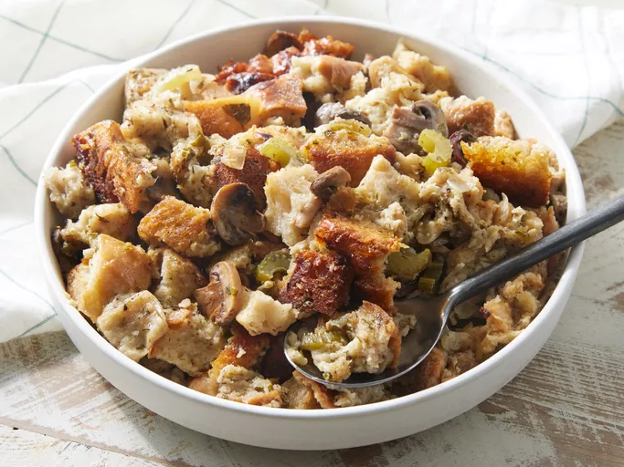

Stuffing

Description
Save oven space with this Crock-Pot stuffing recipe. It's easy, low-maintenance, and absolutely irresistible.
Ingredients
- Butter
- Vegetables
- Parsley
- Bread
- Seasoning
- Broth
- Eggs
Steps
- Sauté the vegetables.
- Spoon the cooked vegetables over the bread and season.
- Moisten with broth, then add the eggs.
- Transfer the mixture to a slow cooker and cook.